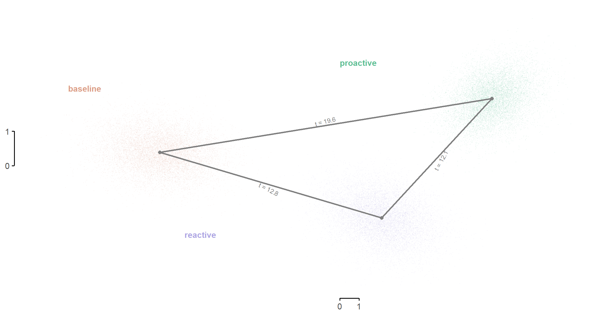

about
supplementary analysis for jocn manuscript
source(here::here("code", "_packages.R"))
source(here("code", "_vars.R"))
## read data:
a <- readRDS(here("in", "roistats_hilo_target_2trpk_unshifted.RDS"))
## get subjs with complete data
is.missing.fmri <- apply(a, 1, function(x) any(is.na(x)))
subjs.missing.fmri <- names(is.missing.fmri)[is.missing.fmri]
subjs.complete <- sort(setdiff(subjs80, subjs.missing.fmri))
a <- a[subjs.complete, , , ]
## subset data by DMCC35 parcels
X <- a[, schaeferkey[dmcc35], , ]
dim(X) <- c(length(subjs.complete), length(schaeferkey[dmcc35])*length(tasks), length(sessions))
dimnames(X) <- list(
subj = subjs.complete,
parcel_task = combo_paste(schaeferkey[dmcc35], tasks),
session = sessions
)
## simulate noise (for false positive control analysis)
X_noise <- array(rnorm(prod(dim(X))), dim = c(dim(X)), dimnames = dimnames(X))notes
Data/sample/preproc
- Subjects: 67 included (with complete fMRI data; INCLUDES TWINS)
- surface + fMRIprep
- schaefer 400-07
1st-Level GLM
- 2trpk, runwise GLMs
Target TRs:
- Axcpt: 4
- Cuedts: 4
- Stern: 6
- Stroop: 2
GLM contrasts:
- Axcpt: \(\text{BY} - \text{BX}\)
- Cuedts: \((\text{InConSwitch} + \text{InConRepeat} - \text{ConSwitch} - \text{ConRepeat})/2\)
- Stern: \(\text{LL5RN} - \text{LL5NN}\)
- Stroop: \((\text{PC50InCon} + \text{biasInCon} - \text{PC50Con} - \text{biasCon})/2\)
LDA projection
lda_proj <- function(data_matrix, whiten) {
# data_matrix <- X
mu_k <- apply(data_matrix, 2:3, mean) ## mean profile of each session (over subjs)
B_k <- cov(t(mu_k)) ## between-session covariance matrix
if (whiten == TRUE) {
data_matrix_c <- sweep(data_matrix, 2:3, mu_k, "-") ## center each session's profiles
data_matrix_c <- aperm(data_matrix_c, c(1, 3, 2))
dim(data_matrix_c) <- c(prod(dim(data_matrix_c)[1:2]), dim(data_matrix_c)[3]) ## concatenate sessions along rows
Winv <- invcov.shrink(data_matrix_c, verbose = FALSE) ## within-session (noise) inverse covariance matrix
} else {
Winv <- diag(dim(data_matrix)[2])
}
svd_W <- svd(crossprod(Winv, B_k))
V <- svd_W$u[, 1:2] %*% diag(svd_W$d[1:2]^2) ## linear discriminants (scaled by variances)
V
}
loocv_lda_proj <- function(data_matrix, .whiten) {
# subj.i <- 1; data_matrix = X
l <- vector("list", length(dim(data_matrix)[1]))
for (subj.i in seq_len(dim(data_matrix)[1])) {
# subj.i = 1
X_train <- data_matrix[-subj.i, , ]
X_test <- data_matrix[subj.i, , ]
mu_train <- apply(X_train, 2, mean) ## training set mean of (session) means
X_test <- sweep(X_test, 1, mu_train) ## center test set on mean of means in training set
V_train <- lda_proj(X_train, .whiten) ## discriminants
X_train_proj <- crossprod(X_test, V_train)
X_train_proj <- data.table::as.data.table(X_train_proj, keep.rownames = TRUE)
X_train_proj$subj <- subj.i
l[[subj.i]] <- X_train_proj
}
rbindlist(l)
}
boot_lda_loocv <- function(d, n_iter = 1E4, n_cores = n.cores / 2) {
# d = X_proj_loocv_lda; n_cores = n.cores / 2; n_iter = 1E4
n.subj <- length(unique(d$subj))
set.seed(0)
cl <- makeCluster(n_cores)
registerDoParallel(cl)
l <- foreach(ii = seq_len(n_iter), .inorder = FALSE, .packages = "data.table") %dorng% {
inds <- sample.int(n.subj, replace = TRUE)
d_ii <- d[subj %in% inds]
d_ii_bar <- d_ii[, .(V1 = mean(V1), V2 = mean(V2)), by = rn]
d_ii_bar$iter <- ii
d_ii_bar
}
stopCluster(cl)
rbindlist(l)
}
## lda, pca, noise ----
X_proj_loocv_lda <- loocv_lda_proj(X, .whiten = TRUE)
X_bar_loocv_lda <- boot_lda_loocv(X_proj_loocv_lda)
X_proj_loocv_pca <- loocv_lda_proj(X, .whiten = FALSE)
X_bar_loocv_pca <- boot_lda_loocv(X_proj_loocv_pca)
X_proj_loocv_noise <- loocv_lda_proj(X_noise, .whiten = TRUE)
X_bar_loocv_lda_noise <- boot_lda_loocv(X_proj_loocv_noise)plot
## plot ----
p_loocv_lda_points <- X_bar_loocv_lda %>%
ggplot(aes(V1, V2, fill = rn, color = rn)) +
geom_point(size = 0.1, alpha = 0.05) +
scale_fill_manual(values = colors.session) +
scale_color_manual(values = colors.session) +
geom_text(
data =
data.frame(
x = c(-6, -1, 2.25),
y = c(-0.75, 1, -1),
# y = c(-1.5, -1.5, -1.5),
fold = "fold 1",
label = sessions,
rn = sessions
),
aes(x = x, y = y, label = label, color = rn), hjust = 0, size = 4, fontface = "bold") +
theme(legend.position = "none", panel.grid = element_blank(), axis.ticks = element_line()) +
scale_x_continuous(breaks = c(0, 1)) +
scale_y_continuous(breaks = c(0, 1)) +
labs(x = "LD1", y = "LD2", title = "LDA (loocv)")
p_loocv_pca_points <- X_bar_loocv_pca %>%
ggplot(aes(-V1, V2, fill = rn, color = rn)) +
scale_alpha_continuous(range = c(0, 1)) +
geom_point(size = 0.1, alpha = 0.05) +
scale_fill_manual(values = colors.session) +
scale_color_manual(values = colors.session) +
theme(legend.position = "none", panel.grid = element_blank(), axis.ticks = element_line()) +
scale_x_continuous(breaks = c(0, 0.01)) +
scale_y_continuous(breaks = c(0, 0.01)) +
labs(x = "PC1", y = "PC2", title = "PCA (loocv)")
p_noise_lda_points <- X_bar_loocv_lda_noise %>%
ggplot(aes(V1, V2, fill = rn, color = rn)) +
geom_point(size = 0.1, alpha = 0.05) +
scale_fill_manual(values = colors.session) +
scale_color_manual(values = colors.session) +
theme(legend.position = "none", panel.grid = element_blank(), axis.ticks = element_line()) +
scale_x_continuous(breaks = c(0, 1)) +
scale_y_continuous(breaks = c(0, 1)) +
labs(x = "LD1", y = "LD2", title = "null (simulated)")
p_loocv_points <- grid.arrange(
p_loocv_pca_points, p_loocv_lda_points, p_noise_lda_points, ncol = 3,
top = "resampled session centroids (dims: dmcc35 parcels*task)"
)cross-validated mahalanobis
distance_cv <- function(B1, B2, m, regressors) {
# B1 = B[, , 1]; B2 = B[, , 2]
## D = diag(A_1 %*% A_2), where A_1 = m %*% B_1 and A_2 = m %*% B_2
## i.e., diagonal of product of pattern contrast matrices.
## aka, vector of all pairwise distances (includes diag):
D <- colSums(t(m %*% B1 * m %*% B2))
matrix(D, ncol = length(regressors), dimnames = list(.row = regressors, .col = regressors)) ## reshape to matrix
}
contrast_matrix <- function(n, condition.names) {
# n <- 10
# condition.names <- letters[1:n]
if (n < 2) stop("you need more than 1 condition you dummy")
W <- matrix(0, nrow = n^2, ncol = n)
if (missing(condition.names)) {
dimnames(W) <- list(contrast = NULL, condition = NULL)
} else {
dimnames(W) <- list(
contrast = paste0(rep(condition.names, each = n), "_", rep(condition.names, n)),
condition = condition.names
)
}
for (condition.i in seq_len(n)) {
# condition.i = 1
row.beg <- (condition.i - 1) * n + 1
row.end <- (condition.i - 1) * n + n
W.i <- W[row.beg:row.end, ] ## square matrix; the contrasts that define a column of the similarity matrix
W.i[, condition.i] <- 1 ## the condition to which all others are contrasted
diag(W.i) <- diag(W.i) - 1 ## all others
W[row.beg:row.end, ] <- W.i
}
W
}
M <- contrast_matrix(3, sessions) ## matrix that calculates all pairwise contrasts between conditions
## est invcov:
mu_k <- apply(X, 2:3, mean) ## mean profile of each session (over subjs)
data_matrix_c <- sweep(X, 2:3, mu_k) ## center each session's profiles
data_matrix_c <- aperm(data_matrix_c, c(1, 3, 2))
dim(data_matrix_c) <- c(prod(dim(data_matrix_c)[1:2]), dim(data_matrix_c)[3]) ## concatenate sessions along rows
Winv <- invcov.shrink(data_matrix_c, verbose = FALSE)
## est cross-validated distances:
D <- array(
NA,
dim = c(length(sessions), length(sessions), dim(X)[1]),
dimnames = list(session = sessions, session = sessions, subj = dimnames(X)[[1]])
)
for (subj.i in seq_len(dim(X)[1])) {
# subj.i = 1
x_train <- X[subj.i, , ]
x_test <- X[-subj.i, , ]
x_test <- apply(x_test, 2:3, mean)
D[, , subj.i] <- distance_cv(t(Winv %*% x_train), t(x_test), M, regressors = sessions)
}
## unwrap to data.table:
l <- vector("list", dim(X)[1])
for (subj.i in seq_along(l)) {
d <- D[, , subj.i]
v <- d[lower.tri(d)]
names(v) <- c("bas_pro", "bas_rea", "pro_rea")
l[[subj.i]] <- as.data.table(v, keep.rownames = TRUE)
}
d <- rbindlist(l, idcol = "subj")plot
## stats:
d_stats <- d %>%
group_by(rn) %>%
summarize(
b = mean(v),
s = t.test(v, alternative = "greater")$statistic,
p = t.test(v, alternative = "greater")$p.value
)
d_stats_pairwise <- d %>%
pivot_wider(names_from = "rn", values_from = "v") %>%
summarize(
b_bp_br = mean(bas_pro - bas_rea),
b_br_rp = mean(bas_rea - pro_rea),
t_bp_br = t.test(bas_pro, bas_rea, paired = TRUE)$statistic,
t_br_rp = t.test(bas_rea, pro_rea, paired = TRUE)$statistic,
p_bp_br = t.test(bas_pro, bas_rea, paired = TRUE)$p.value,
p_br_rp = t.test(bas_rea, pro_rea, paired = TRUE)$p.value
)
d_stats %>% kable| rn | b | s | p |
|---|---|---|---|
| bas_pro | 9.091953 | 19.47435 | 0 |
| bas_rea | 5.581978 | 12.50037 | 0 |
| pro_rea | 5.026953 | 12.01258 | 0 |
d_stats_pairwise %>% kable| b_bp_br | b_br_rp | t_bp_br | t_br_rp | p_bp_br | p_br_rp |
|---|---|---|---|---|---|
| 3.509975 | 0.5550244 | 8.147633 | 0.9550536 | 0 | 0.3430357 |
## plot:
d %>%
ggplot(aes(rn, v)) +
geom_hline(yintercept = 0) +
geom_line(aes(group = subj), alpha = 1/3) +
stat_summary(fun = "mean", geom = "bar", width = 0.5) +
stat_summary(fun.data = "mean_cl_boot", color = "black", size = 2, geom = "errorbar", width = 0.1) +
labs(
title = "cross-validated distances (dims: dmcc35 parcel*task)",
x = "contrast",
y = "group-mean distance"
)figure for manuscript
# theme_set(theme_bw(base_size = 10))
centroids <- X_bar_loocv_lda %>% group_by(rn) %>% summarize(V1 = mean(V1), V2 = mean(V2))
centroids_w <- centroids %>% pivot_wider(values_from = c("V1", "V2"), names_from = "rn")
segment.size <- 1
stattext.size <- 3
p_points_withstats <-
X_bar_loocv_lda %>%
ggplot(aes(V1, V2, fill = rn, color = rn)) +
geom_point(size = 0.2, alpha = 0.1, pch = 16) +
scale_fill_discrete_qualitative(palette = "Dynamic") +
scale_color_discrete_qualitative(palette = "Dynamic") +
geom_segment(
data = centroids_w, inherit.aes = FALSE, size = segment.size, alpha = 1, color = "grey50",
aes(x = V1_baseline, xend = V1_proactive, y = V2_baseline, yend = V2_proactive)
) +
geom_segment(
data = centroids_w, inherit.aes = FALSE, size = segment.size, alpha = 1, color = "grey50",
aes(x = V1_baseline, xend = V1_reactive, y = V2_baseline, yend = V2_reactive)
) +
geom_segment(
data = centroids_w, inherit.aes = FALSE, size = segment.size, alpha = 1, color = "grey50",
aes(x = V1_reactive, xend = V1_proactive, y = V2_reactive, yend = V2_proactive),
) +
geom_point(
data = centroids,
size = 2, pch = 16, color = "grey50"
) +
annotate(
x = (centroids_w$V1_baseline + centroids_w$V1_proactive)/2,
y = (centroids_w$V2_baseline + centroids_w$V2_proactive)/2,
geom = "text",
label = paste0(
"t = ", d_stats %>% filter(rn == "bas_pro") %>% pull("s") %>% round(1), "\n"
# "p ", d_stats %>% filter(rn == "bas_pro") %>% pull("p") %>% format.pval
),
size = stattext.size,
angle = 10, color = "grey50"
) +
annotate(
x = (centroids_w$V1_baseline + centroids_w$V1_reactive)/2,
y = (centroids_w$V2_baseline + centroids_w$V2_reactive)/2,
geom = "text",
label = paste0(
"\nt = ", d_stats %>% filter(rn == "bas_rea") %>% pull("s") %>% round(1)
# "p ", d_stats %>% filter(rn == "bas_rea") %>% pull("p") %>% format.pval
),
size = stattext.size,
angle = -29, color = "grey50"
) +
annotate(
x = (centroids_w$V1_proactive + centroids_w$V1_reactive)/2,
y = (centroids_w$V2_proactive + centroids_w$V2_reactive)/2,
geom = "text",
label = paste0(
"\nt = ", d_stats %>% filter(rn == "pro_rea") %>% pull("s") %>% round(1)
# "p ", d_stats %>% filter(rn == "pro_rea") %>% pull("p") %>% format.pval
),
size = stattext.size,
angle = 53, color = "grey50"
) +
geom_text(
data =
data.frame(
x = c(-14, 0, -8),
y = c(2.25, 3, -2),
label = sessions,
rn = sessions
),
aes(x = x, y = y, label = label, color = rn), hjust = 0, size = 4, fontface = "bold") +
theme(
legend.position = "none",
panel.grid = element_blank(),
panel.border = element_blank(),
axis.line = element_line(),
axis.ticks = element_line(),
axis.title = element_blank()
) +
coord_capped_cart(left = "both", bottom = "both") +
scale_x_continuous(breaks = c(0, 1)) +
scale_y_continuous(breaks = c(0, 1))
p_points_withstats
ggsave(
here("out", "fig_multivariate_triangle.tiff"),
p_points_withstats, device = "tiff", dpi = 600, width = 7, height = 6, unit = "cm"
)